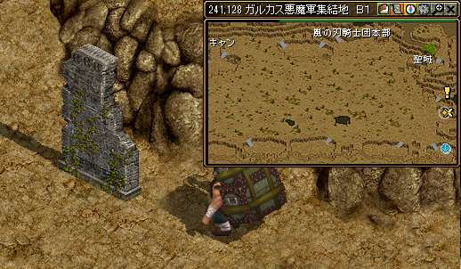

◾️Lv900以上で受託可能
◾️経験値約371億 ◾️目安30分
◾️経験値約371億 ◾️目安30分
1. 世紀の発明
ガイド901~のクエスト/世紀の発明へを選択し飛ぶ。 【60.143】付近にいる【ドブラー】と話してクエスト開始 【60.143】付近にいる【ドブラー】と話してクエスト開始 ドブラー前を記憶１ ドブラー前を記憶１ |
|
 |
隣の鏡をクリックしてクエストＵＰ ドブラーと話してＵＰ 経験値が貰えるのでパワキを準備しよう！ |
2. 古代魔法の痕跡
 |
ガイド601~の狩場/モリネル地上６階へを選択し飛ぶ。 MAPの×印の墓をクリック！ 127.83 98.85 89.27 53.36 89.93 127.83 98.85 89.27 53.36 89.93 |
|---|---|
|
記憶１でドブラーの前へ ドブラーと話してクエストUP。 経験値が貰えるのでパワキを準備しよう！ |
3. ストレンジの鏡像
 |
街移動でボルティッシュへ 【59.43】にいる【テサ】と話してUP |
|---|---|
 |
ガイド901~狩場/狩場古代悪魔研究所を選択し飛ぶ。 右側にいる【汚染狂魔】を倒す |
 |
ストレンジの鏡像２０個集める まぁまぁのドロップ率。ミラーはドロップせず。 街戻りで【ボルティッシュ】へ 【テサ】と話してUP |
 |
記憶１でドブラーの前へ 【ドブラー】と話してUP 経験値が貰える！ |
4. 鏡の中のコクーン
|  |
ガイド651~狩場/ガルカス悪魔軍集結地を選択し飛ぶ。 【241.128】にある石をクリックしてUP |
|---|---|
 |
【レアコクーン】を倒してUP |
 |
記憶１でドブラーの前へ 【ドブラー】と話してクエストUP。 経験値が貰える！ |